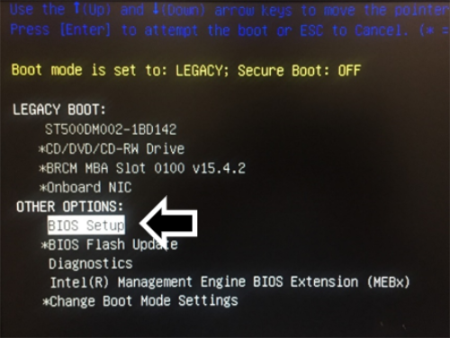
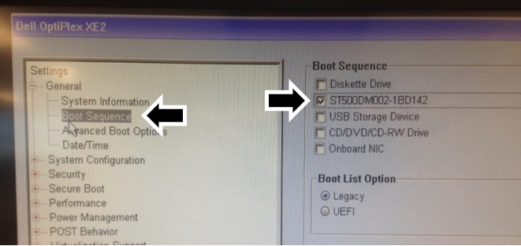
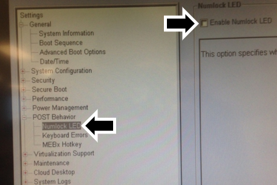
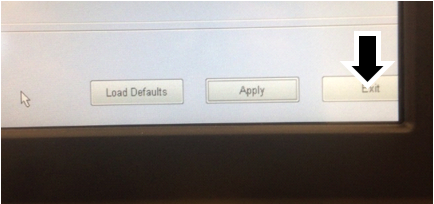
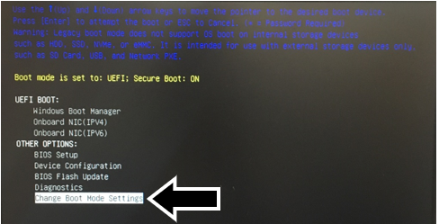
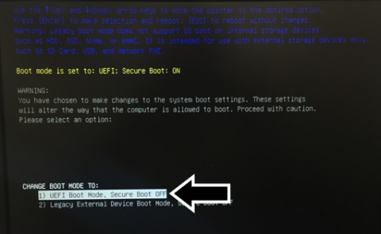
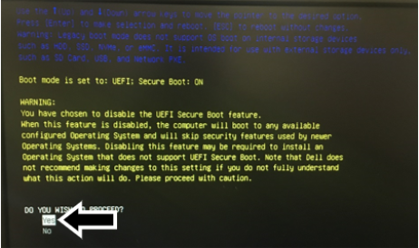
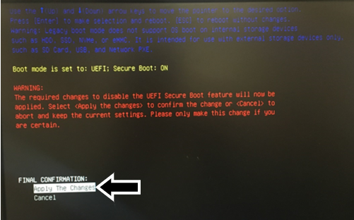

BIOS Configuration Procedure
Parts and Materials Required
Time Required
- 10 minutes
Procedure
 On a Dell OptiPlex XE for Image v3.0.11 (Win Vista)
On a Dell OptiPlex XE for Image v3.0.11 (Win Vista)
- Shut down and reboot the Panther System PC.
- Press F12.
- Scroll down to BIOS Setup.
- Press Enter.
- Scroll down to Boot Sequence.
- Press Enter.
The Boot Device Menu screen appears.

Note — If the Boot Device Menu is locked, complete the following steps to unlock it: - Tab to highlight the Unlock button.
- Press Enter.
- Enter gpservice in the input field.
- Press Enter.
- Using the Tab key, navigate to the right screen and clear the following checkbox options by pressing the Enter key:
- Onboard or USB floppy drive
- Onboard or USB controller USB CD-ROM
- Onboard network controller
- Onboard USB device
- Tab to Apply and press Enter.
- Scroll down to Security.
- Press Enter.
- Scroll down to administrator password.
- Tab over to the New Password field.
- Press the Num Lock key and the Caps Lock key to turn them off.
Note — Ensure LEDs on the keyboard over Num Lock and Caps Lock are off. - Enter gpservice in the New Password and Confirm New Password fields.
- Tab over to OK and press Enter.
- Scroll down to Post Behavior.
- Press Enter.
- Scroll down to Numlock LED.
- Tab over to uncheck Enable Numlock LED.
- Tab to Apply.
- Press Enter.
- Tab to Exit and press Enter.
The PC reboots.
- When prompted in the upper right corner of the Dell OptiPlex XE screen, press F12 to enter into BIOS.
- Confirm the Administration Password control access.
The Boot Device Menu screen appears.
- Scroll down to System Setup and press Enter.
- Tab to highlight the Unlock button.
- Press Enter.
- Enter gpservice in the input field.
- Tab to OK and press Enter.
- Tab to Exit and press Enter.
- Shut down and reboot the PC and system.
- Continue to Resetting the PC Clock and Date.
On a Dell OptiPlex XE2 for Image v3.0.11 (Win Vista) and Image v5.7.1 / v5.8.3 (Win 7)
- Restart the Panther System PC.
- Press the F12 key when the boot process begins.
- On the Boot Screen, use the arrow keys to select BIOS Setup.

- Press Enter and the Dell OptiPlex XE2 BIOS Configuration window appears.
Note — If the BIOS Menu is locked: - Click the Unlock Button (at the bottom of the screen).
- Enter "gpservice" in the input field and click Enter.
If "gpservice" is accepted, proceed to Step 5.
If "gpservice" is NOT accepted as a password, you will have to reset the BIOS password. Refer to Resetting the BIOS password on an XE2
- Select Boot Sequencein the General section on the left of the BIOS Configuration window.
- Only the hard drive, shown in the following figure as ST500DM002-1BD142, should be checked.
Note — The name of the hard drive will vary from system to system. Uncheck (clear) all other options under Boot Sequence. 
- Expand the POST Behavior section in the left-hand pane.
- Select Numlock LED. Uncheck the Enable Numlock LED option in the right pane.

- Expand the Security section in the left-hand pane.
- Select Admin Password.
- Enter gpservice as the password in both the New password and Confirm password fields in the right pane.
NOTE — ENSURE THAT NUM LOCK IS TURNED OFF when entering the new password. - Click OK.
- Click Exit to reboot the Panther System PC.

- On initial boot up USB drivers will auto-install.
- After USB drive installation, reboot the PC.
- Continue to Resetting the PC Clock and Date.
On a Dell OptiPlex XE2 OR a Dell OptiPlex XE3 for Image v6.0.13 (Win 10)
- Restart the Panther System PC.
- Press the F12 key when the boot process begins.
- Set the Boot Mode to: UEFI; Secure Boot: OFF.
- Confirm the current Boot Mode Setting.
(In the example below the Boot Mode is set to: UEFI; Secure Boot: ON, listed in yellow)- If the UEFI; Secure Boot is ON, proceed to Step 5
- If UEFI; Secure Boot is OFF, this procedure is complete.
- Use the arrow keys to highlight Change Boot Mode Settings.

- Press Enter.
- When offered "CHANGE BOOT MODE TO:" select UEFI Boot Mode, Secure Boot OFF.

- Press Enter.
- Select Yes when asked DO YOU WISH TO PROCEED?

- Press Enter.
- Select Apply the Changes for Final Confirmation.

- Press Enter.
- Restart the PC.
 button at the top of the page to send feedback, comments, or change requests.
button at the top of the page to send feedback, comments, or change requests.